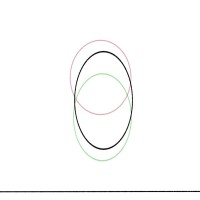
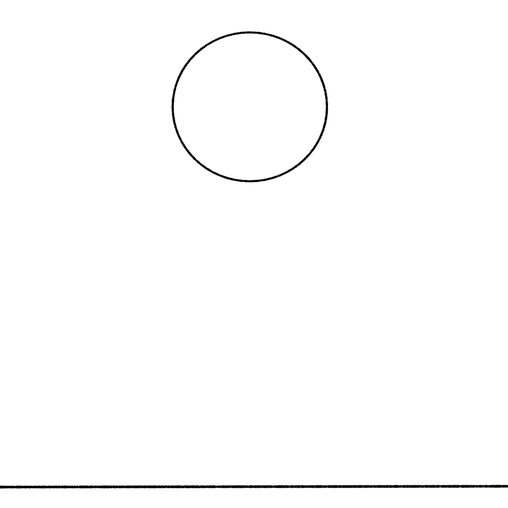
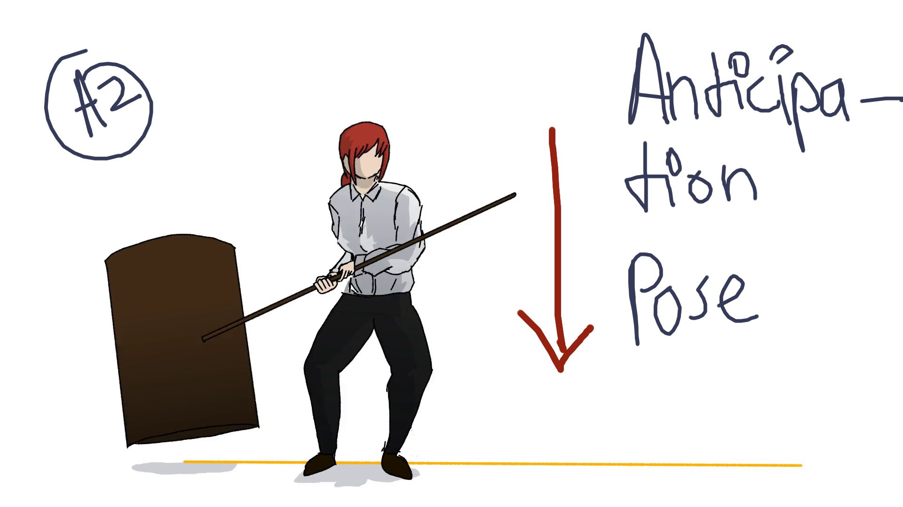

1)Squash and Stretch
Squash and Stretch is one of the most important priciple of animation.
it gives the illusion of the object being animated having mass and being affected by gravity.
One of the best examples of squash and stretch could be the ball we made ,
when the ball goes up or comes down its is streached showing thst it has mass and is falling fast,

when the ball hits the ground it is squashed showing that the gravity is affecting it.
Before Squash and Strech:
After Squash and Strech"
2)Anticipation
Anicipation is when you prepare berfore the action
for example: when a person bends before he jumps,if a person didn't bend thier knees befor jumping would look quite unnatural
So by using Anicipation we prepare the audience before the action
Here is a example of a clip without anticipation:
The last clip was fine as is butafter adding in some anticipation it looks more life like

Here is the anticipation frame/pose we added ,as you see its just a single frame but it makes a lot of diffrence
Note:this anticipation pose right here is the chracter bending her knees before launching forward into the action
3)Staging
Staging is not only a animation principle but also applies to live action movies and tv shows
staging refers to draw the viewers attention to the main element of your animation
thats why it is also applicable to live action cause it there you also have to draw the viewers eye to your subject
Here we have two examoles of staging
if you were given to draw a scene where a interviewer asks super hero a question while audience cheer for him nwhich one would you draw??
In the example above it hard to focus on our main subject thatis the superhero,everything feels cluttred and you can't focus
while here in the above example we can clarly thee sthe hero,the interviewer and the audience,you can clearly see the diffrence your self!